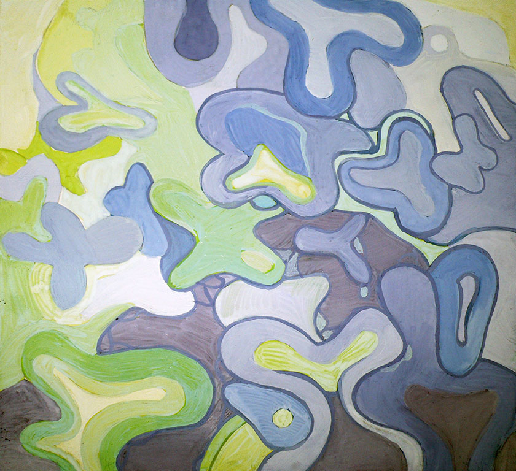
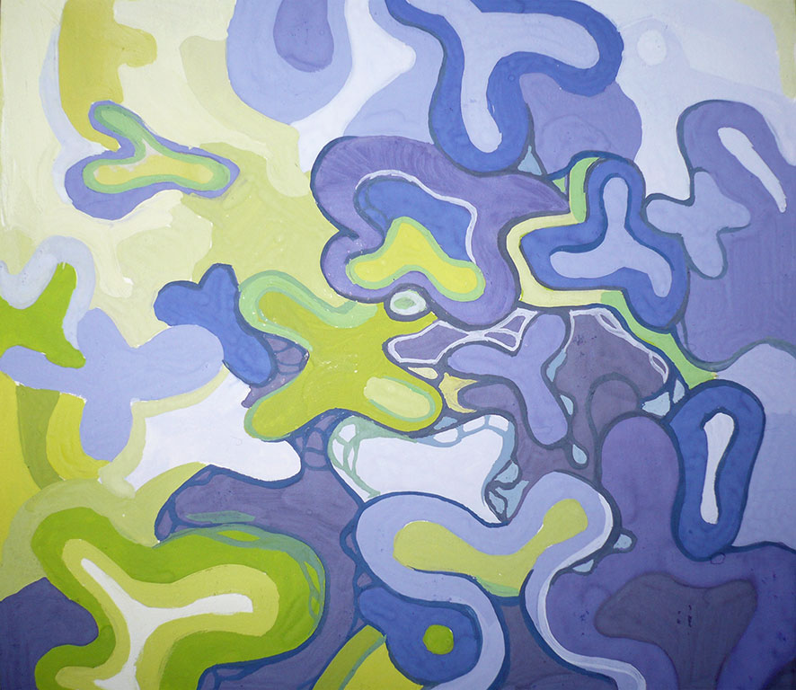
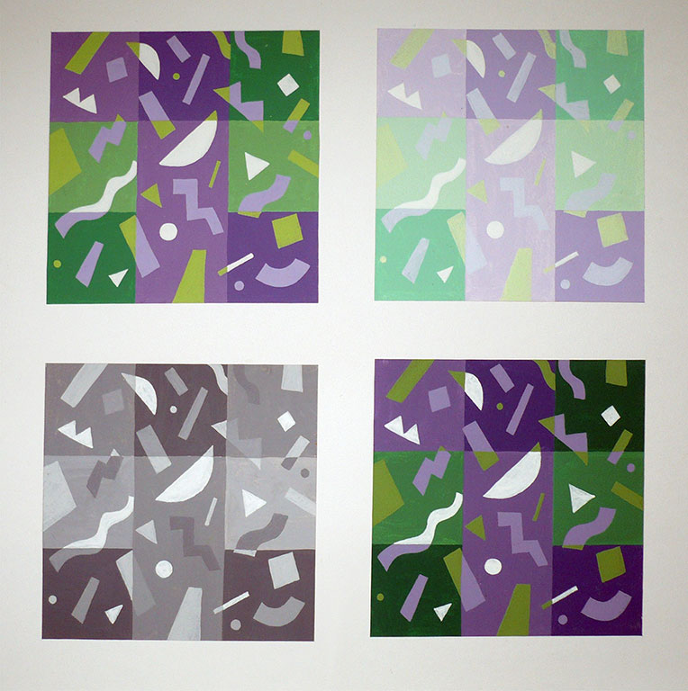
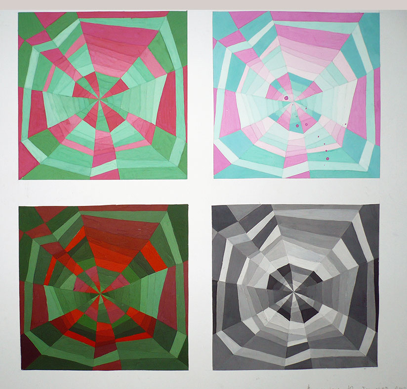
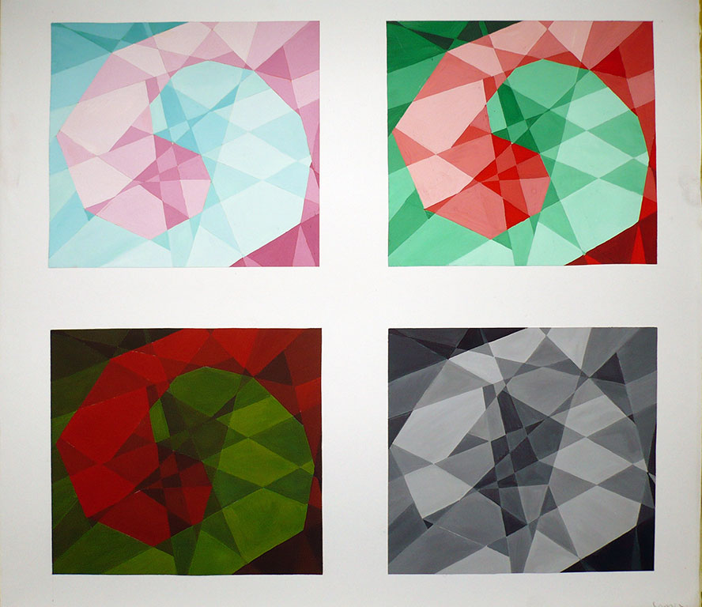

Основы колористики. Типы цветовой композиции и колорита. Понятия гаммы, гармонии, декоративности.
- В насыщенном колорите и нейтральной гамме
- В разбеленном колорите и холодной гамме
- В зачерненном колорите и теплой гамме скаяп
- В ахроматическом колорите
Авторы работ: Дорошенко Д., Казимирова Ю., Липская О., Лавренкина Е., Мельникова О., Недведская О., Печерский А., Ровдо А., Сапега О., Сахнова Е., Скоморощенко М., Стрига Р.
Просмотр зима 2008

01

02

03

04

05